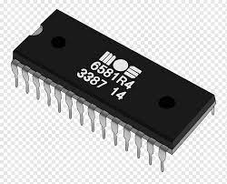

PROM is a blank chip. it is manufactured as blank memory and programmed after manufacturing. you have to purchase blank one then store the program according to your requirement with the help of a special tool and technique called PROM programmer or PROM burner.
